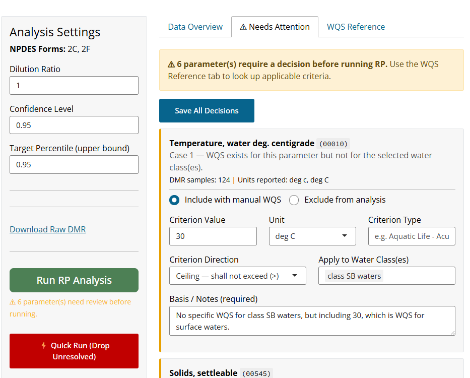
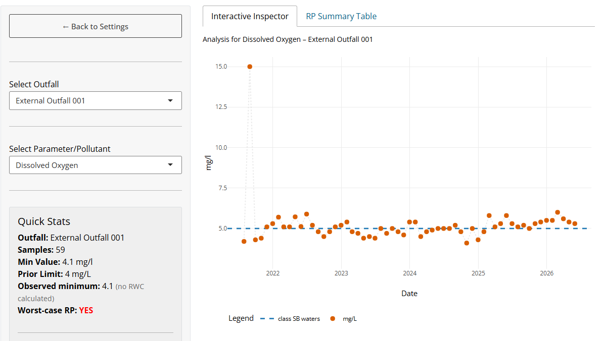
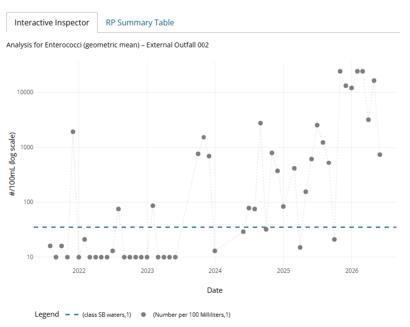

Puerto Rico Reasonable Potential (RP) Calculator
User Guide
Overview
The Puerto Rico Reasonable Potential (RP) Calculator is a web-based application designed to support EPA Region 2 permit writers in determining whether reasonable potential (RP) exists for an NPDES-permitted discharge to cause or contribute to an exceedance of Puerto Rico’s water quality standards (WQS). The application automates the most data-intensive steps of the RP analysis: retrieving effluent monitoring data from a local copy of EPA’s ICIS-NPDES database, aligning those data with the applicable Puerto Rico WQS, performing the statistical projection described in the EPA Technical Support Document for Water Quality-Based Toxics Control (TSD, 1991) where appropriate, and generating a documented, reproducible PDF report.
The application is scoped to Puerto Rico NPDES permits and references the Puerto Rico Water Quality Standards Regulation (PRWQSR), as amended April 2025 (DNER Resolution R-25-006). All numeric criteria, water classifications, and hardness-dependent metal limits applied by the app are drawn directly from that regulation.
Where the data come from. The app does not call a live web service at analysis time. A companion script (refresh_db.R) pulls PR/VI facility and DMR records from the ICIS-NPDES Oracle database on a weekly schedule and writes them to a local SQLite file (data/pr_rp.sqlite) that the app reads. This makes the app fast and reproducible: two analyses run against the same weekly snapshot return the same result. The refresh date therefore bounds how current the data can be.
What the App Does
For each pollutant and outfall combination at a selected facility, the app:
- Retrieves the DMR values whose reporting statistic matches what each criterion is written against — the maximum for most ceiling criteria, the minimum for floor criteria such as dissolved oxygen and pH, and the geometric mean or 90th percentile for interval-based bacteria criteria — or accepts locally supplied data
- Checks reported units against the WQS unit and converts where a conversion is defined
- For criteria evaluated by statistical projection, calculates a Receiving Water Concentration (RWC) using the multiplying factor (MF) method from TSD Section 3.3.2
- For criteria evaluated by direct comparison, compares the appropriate observed statistic to the criterion with no multiplying factor and no dilution
- Compares the result to the applicable criterion from the PRWQSR for each selected water classification and returns a YES / NO / DEPENDS RP determination for each pollutant × outfall × water class combination
- Generates a PDF report — and optionally a ZIP package with supporting data — that documents all inputs, settings, and findings
Not every criterion is a ceiling. Earlier versions of the app treated every criterion as a maximum-concentration ceiling to be projected through the TSD multiplying factor. That is correct for most pollutants but wrong for several important ones — dissolved oxygen (a floor), Enterococci (interval statistics), color and turbidity (direct comparison), oil & grease (narrative), and pH and temperature. Each crosswalk row now declares its own evaluation semantics, so the app applies the right test to each parameter. Section 8.2 describes the parameters that are evaluated by direct comparison rather than projection.
What the App Does Not Replace
The app is an analytical aid, not a substitute for permit writer judgment. It does not:
- Perform whole effluent toxicity (WET) analysis
- Calculate waste load allocations (WLAs) or mixing zone analyses
- Account for background receiving water concentrations
- Evaluate narrative water quality criteria beyond a simple detection screen
- Perform a Streeter-Phelps dissolved-oxygen analysis (see Section 8.2.3)
- Replace the fact sheet or other permit development documentation requirements
When the app returns a YES RP finding, the permit writer must still determine the appropriate effluent limitation based on the applicable water quality standard, the dilution ratio, and any mixing zone authorization. When it returns NO, that finding is based on the statistical projection or direct comparison alone and should be considered alongside other factors described in 40 CFR 122.44(d)(1). A DEPENDS finding means an excursion was not observed but the absence of one cannot, by itself, rule out reasonable potential for that parameter (see Section 9.2 and Section 8.2).
Regulatory Background
Reasonable Potential Under the Clean Water Act
Under 40 CFR 122.44(d)(1)(i), NPDES permits must include effluent limits for pollutants that are or may be discharged at levels that will cause, have the reasonable potential to cause, or contribute to an excursion above any applicable water quality standard. Determining whether a discharge has “reasonable potential” is therefore a required step in permit development for any parameter that is monitored at an outfall.
EPA’s 1991 Technical Support Document for Water Quality-Based Toxics Control (TSD) provides the recommended methodology for making this determination using effluent monitoring data. The core question is whether the upper bound of the expected effluent concentration distribution, projected into the receiving water accounting for dilution, could exceed the applicable criterion. The statistical approach in the TSD uses the coefficient of variation (CV) of the effluent data and the number of samples to construct this projection, with the lognormal distribution used as the basis for the multiplying factors.
The Puerto Rico Water Quality Standards Regulation
The PRWQSR, administered by Puerto Rico’s Department of Natural and Environmental Resources (DNER), establishes the water quality standards that NPDES permits in Puerto Rico must protect. The regulation classifies Puerto Rico’s waters by designated use and sets numeric criteria for a wide range of pollutants. The 2025 amendment (Resolution R-25-006, effective June 27, 2025) is the currently applicable version.
The standards that drive RP determinations fall into several categories as implemented in the app:
- Fixed numeric criteria — a single concentration limit for a given pollutant and water classification (e.g., arsenic in Class SB at 36 µg/L)
- Hardness-dependent criteria — applicable to seven metals in Class SD waters; the criterion is computed from the receiving water hardness using regression equations specified in Rule 1303.1(J)(1) (see Section 8.3)
- Condition-dependent criteria — applicable to Total Ammonia Nitrogen (TAN) in Class SD waters; the criterion varies with receiving water pH and temperature as specified in Rule 1303.2(C)(2)(l) (see Section 8.4)
- Range and floor criteria — pH must stay within a range, and dissolved oxygen must stay above a floor. These are evaluated by direct comparison, not projection (see Section 8.2)
- Interval and narrative criteria — Enterococci criteria are frequency- and interval-based statistics, and oil & grease is a narrative “substantially free from” standard (see Section 8.2.5 and Section 8.2.6)
Three Class SD parameters — total nitrogen, total phosphorus, and selenium — carry separate criteria depending on whether the receiving water is a stream or a reservoir/lake. The app reports these as distinct water-class lines (e.g., class SD waters — stream vs class SD waters — reservoir/lake) so the permit writer can see which receiving-water type drives a finding.
Water Classifications Relevant to NPDES Permitting
The PRWQSR classifies Puerto Rico’s waters into several categories. The app includes the four classifications most relevant to NPDES point source discharges. Understanding these classifications is important because the applicable criterion — and therefore the RP determination — differs by classification.
Class SB — Coastal and Estuarine Waters Class SB encompasses all coastal and estuarine waters of Puerto Rico not designated as the more protective Class SA (which includes the bioluminescent lagoons and other waters of exceptional ecological value where point source discharges are not permitted). Class SB extends from mean sea level to a maximum of approximately 10.35 miles offshore and includes associated wetlands. Designated uses include primary and secondary contact recreation, and propagation and maintenance of desirable species including threatened and endangered species. Most NPDES-permitted facilities discharging to coastal waters in Puerto Rico discharge to Class SB receiving waters.
Class SD — Surface Waters Class SD covers all surface waters of Puerto Rico — streams, rivers, lakes, reservoirs, and inland water bodies — except those designated as the more protective Class SE (Laguna Tortuguero and Laguna Cartagena). Designated uses include use as a raw source of public water supply, propagation and maintenance of desirable species, and primary and secondary contact recreation. Class SD criteria are generally more stringent than Class SB for most parameters because of the drinking water supply designation. Several criteria under Class SD depend on receiving water hardness (for metals) or on pH and temperature (for TAN), and a few distinguish stream from reservoir/lake receiving waters.
Class SG — Ground Waters Class SG includes all ground waters of Puerto Rico, including those that discharge into coastal, surface, and estuarine waters. Designated uses are drinking water supply and agricultural use including irrigation. Ground water criteria are typically the drinking water (DW) or human health (HH) values, whichever is more stringent given the receiving water body into which the ground water flows.
Surface Waters (general) In the app’s water type filter, “Surface Waters” maps to the PRWQSR’s general surface water standards (Rule 1303.1) that apply across all surface water classifications, as distinct from the class-specific criteria under Rule 1303.2. The general standards include temperature, asbestos, radium-226, strontium-90, gross beta, and oil & grease.
Selecting water classifications in the app: The water classification selection determines which WQS rows from the crosswalk are active for both data filtering and RP comparison. Selecting multiple classifications produces RP determinations for each class independently — the app reports a “worst-case” RP across all selected classes, as well as the per-class breakdown. The general-standard parameters (temperature, oil & grease, and the others listed above) appear only when “Surface Waters” or “All” is selected — narrowing to a single specific class will not pull them in. When in doubt about which classification applies to a receiving water body, consult the PRWQSR classification maps (Rule 1302) or contact the DNER Water Quality Program.
Getting Started
Two Workflows at a Glance
The app offers two entry points depending on whether the facility appears in the local ICIS-NPDES database.
| NPDES Workflow | Standalone Workflow | |
|---|---|---|
| Best for | Existing permitted facilities | New permits, reissuances with no prior ID, or supplementing the database with local measurements |
| Data source | Local ICIS-NPDES database (weekly refresh) | User-supplied CSV using the app’s template |
| Requires | NPDES permit ID | Completed DMR template |
| Can supplement with local data | Yes — via the Append DMR function | N/A — local data is the primary source |
Both workflows share the same Analysis Settings, Findings, and Report pages. The only difference is how effluent data are loaded.
Navigating the App
The app uses a single-page layout with page routing. A persistent top bar appears on every page with a ← Back to Start button (returns to the landing page) and a User Guide button (opens this document in a modal window). Within each page you also move using contextual buttons (e.g., “← Back to Search,” “← Back to Settings,” “Return Home”).

NPDES Workflow
Use this workflow when the facility has an active NPDES permit and effluent monitoring data available in the local ICIS-NPDES database.
Step 1: Search and Select a Facility
Click Connect to ICIS-NPDES on the landing page. This opens the facility selection page, which loads the list of NPDES permits for Puerto Rico from the local ICIS-NPDES database at application startup.
Use the Search Permit ID or Facility Name box to find the facility of interest. You can type either the NPDES ID (e.g., PR0001031) or any part of the facility name — the search is case-insensitive and matches partial strings. Select the facility from the dropdown.
Once a facility is selected:
- The map displays a marker at the facility’s reported latitude/longitude from the facility record in the local database
- The Facility Details table displays key permit attributes from that facility record
- The Settings panel and Fetch DMR Data button become visible

Set the date range for DMR retrieval using the Start Date and End Date inputs. The default range is the five years prior to today’s date, which is appropriate for most permit reissuances. The date range controls which DMR records are pulled from the database — it does not filter the facility list.
Selections persist within your session: If you navigate away from the search page and return — for example, to revise a search — your permit ID, date range, NPDES forms, and water classification are retained. These reset only when the app is restarted. Analysis Settings on the Summary page (hardness, pH, temperature, dilution ratio, confidence level) are not persisted, because they re-select naturally when a different permit is fetched.
Step 2: Configure Filters
Before fetching data, configure the two filters that control which parameters are highlighted and which WQS criteria are in scope.
NPDES Forms
Select one or more NPDES application forms from the multi-select dropdown. NPDES applications require permittees to report specific pollutants depending on the type of facility and the nature of the discharge. The forms available in the app correspond to the standard EPA application forms:
- Form 2A — New and existing publicly owned treatment works (POTWs)
- Form 2B — Concentrated Animal Feeding Operations (CAFOs)
- Form 2C — Existing manufacturing, commercial, mining, and silviculture facilities
- Form 2D — New manufacturing, commercial, mining, and silviculture facilities
- Form 2E — Facilities that do not discharge process wastewater
The form selection defines the universe of pollutants expected to be reported for the facility — this determines which pollutants are highlighted in the Data Overview (Coverage Summary) table, and it drives the Reason Included line in the report.
Form selection is a display filter, not an analysis filter. Form selection no longer removes parameters from the calculation. Any parameter that has DMR data and an applicable WQS criterion is evaluated for RP regardless of its form association. Parameters not associated with a selected form are labeled Not in selected forms in the Coverage Summary’s Form column but are still included in the analysis. This change prevents the old failure mode where a parameter with a real criterion silently dropped out because it was not tied to the selected form.
Selecting the right form: If you are unsure which form applies, refer to the facility’s permit application or its permit record. Most municipal wastewater treatment plants use Form 2A. Most industrial and manufacturing dischargers use Form 2C or 2D. When multiple forms apply (e.g., a POTW receiving industrial pretreatment discharges), select all applicable forms.
Water Classifications
Select one or more water classifications from the multi-select dropdown. The choices correspond to Puerto Rico’s PRWQSR classifications described in Section 2.3:
| Selection | Maps to PRWQSR Classification |
|---|---|
| All | All classes in the crosswalk |
| Class SB | Class SB coastal and estuarine waters |
| Class SD | Class SD surface waters (including drinking water subclass) |
| Class SG | Class SG ground waters |
| Surface Waters | General surface water standards (Rule 1303.1) |
These selections determine which WQS criteria rows are active for comparison. When multiple classifications are selected, the app performs the RP comparison independently for each class and reports the worst-case result. Select All to evaluate against every applicable standard in the crosswalk — appropriate when the receiving water classification is uncertain or when you want to be comprehensive.
Class SD and conditional criteria: If Class SD is selected, the conditional receiving water inputs panel appears (see Section 4.6.3). You will need to provide a hardness value or choose the range analysis option, and pH and temperature for TAN, before running RP. This panel is only shown for Class SD because the hardness-dependent metal criteria and the TAN criterion are specific to Class SD surface waters under the PRWQSR.
Step 3: Fetch DMR Data
Click Fetch DMR Data. The app queries the local ICIS-NPDES database for effluent monitoring records matching the selected permit ID and date range, then applies the following processing steps automatically:
Statistic tagging: Each DMR record is tagged with a semantic statistic token (daily maximum, daily minimum, geometric mean, 90th percentile, or average) derived from its ICIS statistical-base code. This is what lets the app keep the right records for each criterion — the minimum for a floor parameter, the geometric mean for a bacteria criterion — instead of keeping only maximums. A parameter with data but no matching criterion is retained rather than discarded, so it can be surfaced on the Needs Attention tab (see Section 4.5) rather than vanishing silently.
NODI code handling: Records with NODI codes B (“no discharge”) or Q (“no discharge this period”) are set to a value of zero. This is consistent with the approach in the TSD — a period of no discharge represents a zero concentration and should be included in the sample set. Records with other NODI codes that prevent a numeric value from being reported are excluded.
Unit detection and filling: DMR reports occasionally omit unit labels for individual records, particularly for NODI-coded rows. The app fills missing units by using the most frequently reported unit for that parameter across the permit’s records, falling back to the WQS unit hint from the crosswalk if all records for the parameter have missing units.
Unit conversion: Each reported value is checked against the WQS unit for its parameter. The converter handles concentration conversions (µg/L ↔︎ mg/L, ng/L → µg/L or mg/L, ppm → mg/L or µg/L), recognizes several units that are written differently but mean the same thing (e.g., ICIS long-form bacteria and color units), and converts Fahrenheit to Celsius for temperature. Mass-load and flow units (e.g., kg/day, MGD) are excluded from the WQS comparison by design rather than treated as errors, because a load cannot be compared to a concentration criterion. When a parameter has no WQS criterion for the selected water class, its records are flagged NO WQS. A genuinely unrecognized unit is flagged FAIL and the value is retained at face value. Every status is shown in the Coverage Summary and carried into the report (see Section 4.4).
After a successful fetch, the app navigates to the Summary (Data Overview) page.
Step 4: Review the Data Overview
The Data Overview page displays the Coverage Summary table, which lists the pollutants relevant to this analysis — those associated with the selected NPDES forms plus any additional parameters that have DMR data — alongside a count of available DMR samples and a unit conversion status indicator. Parameters not associated with a selected form are marked Not in selected forms in the Form column.

Understanding the Coverage Summary columns:
| Column | Description |
|---|---|
| Pollutant | NPDES pollutant name from the form crosswalk |
| Form | The NPDES application form(s) that require this pollutant, or Not in selected forms |
| Ref Param | The DMR parameter code(s) matched to this pollutant in the crosswalk |
| # Samples | Count of qualifying DMR records retrieved for this permit and date range |
| Unit Status | Result of the unit conversion check (see below) |
Unit Status values:
| Status | Meaning | Action |
|---|---|---|
| MATCH | Reported units already match the WQS unit (including recognized aliases) — no conversion needed | None required |
| PASS | Units differed but a multiplicative or temperature conversion was successfully applied | Conversion is shown in the report |
| FAIL (Partial) | Some eligible records converted successfully but others could not | Proceed with caution; non-convertible records are dropped from the RP calculation |
| FAIL | No eligible record could be converted to the WQS unit (unrecognized unit) | Investigate the DMR data; values are retained at face value but dropped from RP |
| EXCLUDED | Every record is a mass-load or flow unit (e.g., kg/day, MGD) | Informational — these cannot be compared to a concentration criterion and are excluded by design |
| NO WQS | No WQS criterion exists for this parameter in the selected water class | Informational — see the Needs Attention tab to add a manual criterion if appropriate |
| NO DATA | Parameter is in the crosswalk but had no DMR records | Informational — nothing to evaluate |
EXCLUDED, NO WQS, and NO DATA are informational, not errors, and are color-coded distinctly (grey / blue-grey / light-grey) from the FAIL states (red / orange). A FAIL or FAIL (Partial) status does not prevent the analysis from running, but it means that some or all values for that parameter may be in the wrong units. Before proceeding, verify the DMR data in the source ICIS-NPDES record for any parameters showing a FAIL status — the issue is often a data entry error in the original submission.
Step 4b: Resolve Parameters Needing Attention
The Summary page has three tabs: Data Overview (the Coverage Summary described above), ⚠ Needs Attention, and WQS Reference.
The Needs Attention tab lists any parameter that has DMR data but no usable WQS criterion for the selected water class. Each flagged parameter is shown in an orange-bordered card with the reason it was flagged:
- Wrong water class — a WQS criterion exists for this parameter, but not for the class(es) you selected.
- No crosswalk entry — the parameter code has no WQS entry at all.
- Missing criterion value — a crosswalk entry exists but its value is blank.
- Reported statistic does not match criterion — the parameter matches a criterion, but its DMR data reports only a statistic the criterion is not written against (for example, a daily maximum reported against a geometric-mean criterion). This is a matched code, so it is added to the flagged set rather than dropped.
For each flagged parameter you choose Include with manual WQS or Exclude from analysis using the radio buttons. To include a parameter, fill in the manual-entry fields: a Criterion Value, a Unit (limited to units the converter can handle), a Criterion Type (e.g., Aquatic Life – Acute), a Criterion Direction, the Water Class(es) it applies to, and a required Basis / Notes field. To exclude a parameter, provide a required reason. Included parameters are injected as manual criteria when you run the analysis; excluded parameters are recorded in the report’s Excluded Parameters section for the permanent record.
Criterion Direction — ceiling vs floor. The direction selector offers Ceiling — shall not exceed (>) and Floor — shall not fall below (<). This matters because a hand-entered floor standard (a dissolved-oxygen-style minimum) would otherwise be treated as a ceiling and projected incorrectly. A floor entry is evaluated by direct comparison against the observed minimum, and a value exactly on the criterion is treated as compliant (the comparison is a strict inequality). Known parameters re-added by hand inherit their built-in profile — a direct parameter stays direct — so the direction selector governs genuinely new parameters.
Green alias hints. Some cards show a green Hint pointing to the code and value that applies — for example, when the criterion for an analyte lives under a synonym parameter code that differs from the one the permittee reported. The hint tells you which criterion ID and value to enter rather than making you hunt for it. Use the WQS Reference tab — a read-only, searchable view of the full crosswalk — to confirm criterion IDs and values before entering a manual criterion.
Run RP is gated on resolution. The Run RP Analysis button stays disabled until every flagged parameter has an Include/Exclude decision. If you need to proceed without resolving them, use the red ⚡ Quick Run (Drop Unresolved) button — it auto-excludes all unresolved parameters and stamps a prominent “preliminary report” warning on the generated report so the omission is on the permanent record.
Parameters that don’t require resolution are never flagged: hardness-dependent metals and TAN (whose criteria are computed at run time from your hardness, pH, and temperature inputs) are treated as matched, and parameters reported only in mass-load or flow units are dropped from the flag pass because they can never be compared to a concentration criterion.

Step 5: Configure Analysis Settings
The left panel of the Summary page contains the Analysis Settings. These control the statistical and receiving water parameters used in the RWC and RP calculations. A full description of the methodology behind each setting is provided in Section 8.
Dilution Ratio
The Dilution Ratio (DR) is the ratio of the total flow at the edge of the mixing zone (effluent plus receiving water) to the effluent flow alone. It represents the degree to which the discharge is diluted by the receiving water at the point of compliance. The default value is 1, which means no dilution is assumed — the effluent concentration itself is compared to the WQS criterion. This is the conservative default and is appropriate when:
- No mixing zone has been authorized
- Dilution data are unavailable
- The receiving water is intermittent or has negligible flow relative to the discharge
If a mixing zone authorization exists or a dilution analysis has been performed, enter the appropriate dilution ratio here. Values greater than 1 reduce the RWC and make an RP finding less likely. The dilution ratio applies only to projected criteria; direct-comparison parameters (Section 8.2) do not use it. The dilution ratio is captured in the report.
Dilution ratio and mixing zones: A dilution ratio greater than 1 implies that a mixing zone exists. Ensure that any mixing zone used here is either already authorized by DNER under Rule 1305 of the PRWQSR, or that you have an appropriate basis for the dilution value. Using an unsupported dilution ratio in the RP analysis may underestimate RP and result in a permit that does not adequately protect water quality.
Confidence Level and Target Percentile
These two parameters control the statistical projection used to compute the Multiplying Factor (MF) — see Section 8.1.1 for a full explanation.
Confidence Level (CL): The probability (a proportion between 0 and 1) that the highest observed value in the sample set exceeds the stated percentile of the underlying effluent distribution. The default is 0.95 (95%). EPA’s TSD presents lookup tables at both 95% and 99% confidence levels; the 95% level is the default used in most regional RP guidance.
Target Percentile: The upper bound of the effluent distribution that the projected RWC is designed to represent, expressed as a proportion. The default is 0.95 (95th percentile). Together with the confidence level, this defines how conservatively the projection treats variability in the effluent — a higher target percentile produces a larger MF and a more conservative RP determination.
Default settings: The defaults of 95% confidence level and 95th percentile target are consistent with EPA Region 2 guidance for RP determinations using existing DMR data. If regional or program-specific guidance specifies different values (e.g., 99%/99% for certain pollutant categories), adjust these settings accordingly. The values used are documented in the report.
Hardness Settings (Class SD only)
This panel appears only when Class SD is selected as a water classification. It controls how the app handles the seven hardness-dependent metal criteria in the PRWQSR (see Section 8.3).
Hardness value (mg/L as CaCO₃): Enter a numeric hardness value for the receiving water if a measured or estimated value is available. The app uses this value to compute the metal criterion from the hardness regression equations in Rule 1303.1(J)(1) and uses it directly in the RP comparison. The default is 100 mg/L as CaCO₃, a reasonable midrange value for Puerto Rico surface waters in the absence of site-specific data; use a measured value whenever possible. If no single hardness is appropriate, the range analysis option reports the criterion as a DEPENDS result with a critical-hardness annotation (see Section 9.2).
pH and Temperature (for TAN, Class SD only)
These inputs appear within the Class SD conditional panel and are used for the Total Ammonia Nitrogen (TAN) RP evaluation (see Section 8.4). The TAN criterion under Rule 1303.2(C)(2)(l) is a function of receiving water pH and temperature.
Use DMR data: If pH (parameter code 00400) and temperature (parameter code 00010) data are available in the DMR records, the app uses those values to compute a time-varying TAN limit — one for each monitoring period that has both a pH and temperature record. The RP determination for TAN is YES if the TAN RWC exceeds the criterion at any point in the monitoring record (the “ever crossed” rule). The mean TAN limit is shown in summary tables and plots for display purposes.
Override with fixed values: If the DMR does not include pH or temperature, or if you prefer to use design receiving water conditions, enter fixed pH and temperature values. The app uses these constant values to compute a single TAN limit for comparison against the TAN RWC.
Receiving Water pH (SU): Valid range 0–14. Default is 6.0 SU, which represents a slightly acidic condition and produces a more conservative (lower) TAN criterion. For context, Class SD waters have a pH standard of 6.0–9.0 SU (Rule 1303.2(C)(2)(d)).
Receiving Water Temperature (°C): Valid range 0–50 °C. Default is 30 °C, consistent with Puerto Rico’s thermal discharge standard of 30 °C (Rule 1303.1(D)(1)).
Step 6: Append Local DMR Data (Optional)
If you have effluent monitoring data that are not in the database — for example, data from a recent sampling event not yet submitted to EPA, or data from a non-standard monitoring program — you can append those records to the retrieved dataset before running the RP analysis.
Download the DMR Template: Click Download DMR Template to download a CSV file pre-populated with the parameter codes and expected WQS units for the selected facility and forms. The template includes one row per parameter code with blank value fields.
Complete the template: Fill in the following columns for each record you want to add:
| Column | Description |
|---|---|
parameter_code |
5-digit DMR parameter code (pre-filled from crosswalk) |
parameter_desc |
Parameter description (informational only) |
dmr_value_nmbr |
Observed concentration (numeric) |
dmr_unit_desc |
Units for the reported value |
monitoring_period_end_date |
End date of the monitoring period (YYYY-MM-DD or MM/DD/YYYY) |
perm_feature_nmbr |
Outfall identifier (e.g., 001) |
Multiple rows can be added for a single parameter code — add one row per monitoring period per outfall. Save the file as a CSV.
Upload the completed template: Click Upload CSV to Append and select your completed file. The app validates the required columns, attempts unit conversion, and appends the records to the existing DMR dataset. A notification confirms the number of rows added.
Unit responsibility: When appending local data, you are responsible for ensuring that the units in dmr_unit_desc match what was actually measured. The app will attempt to convert to WQS units, but if the reported unit is not recognized, the value is retained at face value and flagged with a FAIL conversion status. Unit mismatches in appended data appear in the Coverage Summary table.
Step 7: Run the RP Analysis
Click Run RP Analysis. (This button is enabled once every flagged parameter has been resolved — see Section 4.5.) The app computes the RP determination for every parameter × outfall combination in the dataset using the settings configured in Step 5: projected criteria run through the RWC calculation, and direct-comparison criteria are tested against the appropriate observed statistic. When the calculation is complete, the app navigates to the Findings page.
Standalone Workflow
Use the Standalone Calculator when no NPDES ID exists (e.g., for a new permit application) or when you have local monitoring data and prefer not to retrieve data from the database.
Click Standalone Calculator on the landing page. Download the DMR template, complete it with your monitoring data (the same columns described in Section 4.7), and upload it. Because standalone uploads have no ICIS statistical-base codes, every uploaded record is treated as a daily maximum unless the criterion it matches requires a different statistic; where a criterion needs a statistic your upload does not carry, the parameter is surfaced on the Needs Attention tab. From the upload onward, the Standalone workflow uses the same Analysis Settings, Findings, and Report pages as the NPDES workflow.
The Findings Page
After running the analysis, the Findings page presents the results. The left sidebar lets you select an Outfall and a Parameter/Pollutant, shows the Quick Stats panel for the current selection, and provides the Download Report button and Include Data in Download checkbox. Internal outfalls are shown in bold red in the selector and throughout the page so they are not mistaken for external outfalls.

The main panel has two tabs: the Interactive Inspector (a plot plus a math inspector that shows the step-by-step calculation) and the RP Summary Table.
Quick Stats
The Quick Stats panel summarizes the selected outfall × pollutant. It shows the outfall, the sample count, the assessed value, any prior permit limit, the worst-case RP, and — when present — a criterion-specific note carried from the crosswalk.

A few fields adapt to the type of criterion:
- Max Value / Min Value. For ceiling criteria the panel shows the observed maximum; for floor criteria (dissolved oxygen, pH minimum) it shows the observed minimum, because the minimum is the compliance-relevant statistic.
- RWC vs. Observed value. For projected criteria the panel shows the calculated RWC. For direct-comparison criteria it instead shows Observed maximum or Observed minimum with the note “(no RWC calculated),” so an observed value is never misread as dilution-adjusted.
- Worst-case RP. Colored by result — YES (red), DEPENDS (amber), NO (green) — with a per-class breakdown listed below when more than one water class is selected.
- Criterion note. When the crosswalk carries an
rp_notefor the parameter, it appears as a small cream-colored callout with a goldenrod left border (for example, the dissolved-oxygen Streeter-Phelps note or the Enterococci interval note).
Prior Limit shows the most recent numeric effluent limit from the DMR record for the selected parameter and outfall, sourced directly from the DMR’s limit fields — it reflects the limit as recorded in the prior permit, not a limit calculated by this app. It is provided as a reference point for comparing the current RP analysis to existing permit conditions.
The Interactive Inspector Plot
The Inspector plots the observed effluent values over time against the applicable criterion line(s). For projected parameters, a solid Calculated RWC line is also drawn. For direct-comparison parameters, no RWC line is drawn — the observations are compared directly to the dashed criterion line(s). Each water class selected draws its own dashed criterion line, and points are colored by reported unit.

For hardness-dependent metals in Class SD with the range analysis active, the plot area gains a second tab, Hardness vs Limit, showing how the criterion varies with hardness and where the critical hardness falls.
The RP Summary Table
The RP Summary Table tab shows the full RP results for the selected outfall, with one row per pollutant × WQS criterion × water class combination. Columns include the outfall, WQS criterion ID, pollutant name, criterion value, unit, water class, the assessed value (RWC or observed extreme), and the RP determination. Rows are ordered by RP result — YES first, then DEPENDS, then NO — to surface the most critical findings.

Direct-Comparison Plots and the Dissolved-Oxygen Case
Because a floor criterion reads “backwards” from a ceiling, the dissolved-oxygen plot is the clearest illustration of direct comparison: the criterion is a floor (a value below the line is the violation), and the observed minimum is what matters. The plot shows the DO observations against the 5.0 mg/L floor line, with the DO criterion note visible, and no Calculated RWC line (a DO analysis needs Streeter-Phelps inputs the app does not carry — see Section 8.2.3).

Log Axis and Non-Detects
When the observed values sit far above a very small criterion, a linear axis collapses the criterion line onto zero and the plot looks blank. The app guards against this:
- When the observed maximum is 100× the criterion or more, the y-axis switches to a log scale and the axis label gains “(log scale).” This is common and expected rather than a warning about the data. Bacteria counts span five or six orders of magnitude by nature, and human-health criteria for carcinogens are set far below any achievable laboratory quantitation limit — criteria in the crosswalk run down to \(5.1\times10^{-8}\) µg/L for 2,3,7,8-TCDD, so any reported detection clears the threshold. A log axis simply keeps the criterion line and the observations visible in the same frame.
- Non-detects (NODI codes B and Q) are stored as a value of zero, and a log axis cannot display zero. On a log plot they are drawn as open downward triangles at a floor equal to the smallest positive value in the series, and the plot discloses that floor — in the axis label in the app, and in the figure caption in the PDF report. A triangle marks a value known only to be below the reporting limit; never read it as a measurement.
- If every observation is a non-detect, no positive value exists to compare against the criterion, so the plot stays on a linear axis and the points render normally at zero.
Note that this ratio is not a units check. Reported units are reconciled against the criterion’s units before plotting (see Section 9.4), so a wide gap on the plot is not by itself evidence of a reporting error. The parameters that trigger the log axis most often — Enterococci, fecal coliform, sulfide, sulfate — are wide-range by nature, and the same log axis and non-detect markers are mirrored in the PDF report.

Report Generation
Download Options
Click Download Report in the left sidebar of the Findings page. Two download formats are available:
PDF only (default): A single PDF report rendered from a Quarto template. The report documents all analysis inputs, settings, and findings in a format suitable for inclusion in a permit record.
PDF + Data (ZIP): Check the Include Data in Download checkbox before clicking Download Report. The app bundles the PDF together with:
data.xlsx— an Excel workbook with sheets for the summary findings, the full RP results table, the DMR records used in the analysis, and the NPDES forms coverage tableREADME.txt— a plain-text summary of the analysis settings and permit ID
Use the ZIP option when you want to archive the underlying data alongside the report, or when the findings will be reviewed by others who need the raw numbers.
Report Contents
The PDF report includes:
Summary section: Permit ID, facility name, date range, NPDES forms, water classifications, dilution ratio, confidence level, target percentile, hardness setting, and the number of outfalls analyzed. If the report was produced by Quick Run with unresolved parameters, a prominent preliminary-report warning appears here.
RP Findings table: All results, ordered by severity (YES, then DEPENDS, then NO). A Basis column distinguishes “Calculated” (a projected RWC) from “Observed max/min” (a direct comparison), so an observed dissolved-oxygen minimum can’t be misread as dilution-adjusted.
Per-pollutant sections: One section per pollutant per outfall. Each section may include:
- An orange criterion note callout at the top of the section, carrying the criterion-specific guidance from the crosswalk (the DO Streeter-Phelps note, the Enterococci 90-day interval note, the temperature in-stream note, or the oil & grease narrative note)
- A Reason Included line and, where applicable, a Manual WQS Applied callout
- For projected parameters, the step-by-step RWC Calculation (\(CV\), \(\sigma_g\), \(p_n\), \(z_p\), \(z_{target}\), MF, RWC)
- For direct-comparison parameters, an Assessed Value note stating that the observed maximum or minimum was compared to the criterion directly, with no multiplying factor and no dilution ratio
- The observed vs. WQS/RWC plot (with the same log axis and non-detect markers as the app when the values warrant it)
- A limit history table when prior permit limits were present in the DMR record
Manual WQS Overrides and Excluded Parameters: Sections documenting any hand-entered criteria and any parameters excluded on the Needs Attention tab, for the permanent record.
Coverage table: The NPDES forms coverage summary showing which expected pollutants had data and the unit conversion status for each.
Screenshot pending — img/report_criterion_note.png
An excerpt from a generated PDF report showing an orange criterion-note callout (the DO Streeter-Phelps note, or the Enterococci interval note) sitting above the “Assessed Value” text in a per-pollutant section.

Report generation time: Rendering the PDF runs a Quarto document with embedded plots for every pollutant × outfall combination. For facilities with many parameters and multiple outfalls, this can take 30–90 seconds. A progress indicator is displayed during rendering. Do not close the browser tab while the report is generating.
Methodology
This section describes the statistical and regulatory methods used by the app to evaluate reasonable potential. It covers the projection approach used for most parameters, the direct-comparison parameters that bypass it, the hardness-dependent metals, and Total Ammonia Nitrogen.
The Statistical Projection Approach (TSD Section 3.3.2)
The fundamental question in an RP determination is whether the effluent, after accounting for dilution, could cause an exceedance of the applicable criterion in the receiving water. The challenge is that effluent concentrations are variable — a single measured maximum may not represent the true upper bound of what the discharge is capable of producing.
EPA’s TSD addresses this by treating the effluent concentration data as a sample from an underlying lognormal distribution and projecting the upper bound of that distribution at a specified confidence level. This approach simultaneously accounts for data uncertainty (a small number of samples represents the highest value less reliably than a large number does) and estimates the statistical upper bound of the effluent distribution at a user-specified probability level (the target percentile). The result is a Multiplying Factor (MF) applied to the observed maximum concentration before comparing to the criterion.
The Multiplying Factor
The MF is derived in two steps following Box 3-2 of the TSD.
Step 1 — Percentile represented by the maximum observation. For a dataset of \(n\) samples at confidence level CL, the highest observed value exceeds the \(p_n\)-th percentile of the underlying distribution with probability CL, where:
\[p_n = (1 - CL)^{1/n}\]
For example, with \(n = 10\) samples and CL = 0.95, the maximum value exceeds approximately the 74th percentile of the distribution with 95% confidence.
Step 2 — Project from the observed percentile to the target percentile. Assuming a lognormal distribution for the effluent:
\[MF = \exp\left[(z_{target} - z_p) \cdot \sigma_g\right]\]
where \(z_{target}\) is the standard normal variate corresponding to the target percentile, \(z_p\) is the standard normal variate corresponding to \(p_n\), and \(\sigma_g = \sqrt{\ln(CV^2 + 1)}\) is the geometric standard deviation of the lognormal distribution expressed via the coefficient of variation (CV).
The coefficient of variation is estimated as \(CV = s / \bar{x}\), where \(s\) is the sample standard deviation and \(\bar{x}\) is the sample mean. For datasets with fewer than 10 samples, the CV cannot be estimated reliably from the data alone, and the app assigns a default CV of 0.6, consistent with the TSD recommendation and EPA’s national characterization of effluent variability.
The MF is bounded to be no less than 1. An MF below 1 would imply the maximum observed value already exceeds the target percentile — in which case no upward projection is needed and the maximum value itself is used.
The Receiving Water Concentration
For projected criteria, the RWC is:
\[RWC = \frac{C_{max} \times MF}{DR}\]
where \(C_{max}\) is the maximum observed effluent concentration (in WQS units), MF is the multiplying factor, and DR is the dilution ratio. The RP finding is YES if RWC > criterion for any applicable water class.
Worked Example
Consider a facility with 8 observations of a pollutant at an outfall, with a maximum of 45 µg/L, a mean of 18 µg/L, and a standard deviation of 12 µg/L. Analysis settings are CL = 0.95, target percentile = 0.95, and DR = 1. Assume the criterion is 36 µg/L.
\[CV = 12 / 18 = 0.667\] \[\sigma_g = \sqrt{\ln(0.667^2 + 1)} = \sqrt{\ln(1.444)} = 0.603\] \[p_n = (1 - 0.95)^{1/8} = 0.05^{0.125} = 0.693\] \[z_p = \Phi^{-1}(0.693) = 0.503\] \[z_{target} = \Phi^{-1}(0.95) = 1.645\] \[MF = \exp\left[(1.645 - 0.503) \times 0.603\right] = \exp(0.689) = 1.99\] \[RWC = (45 \times 1.99) / 1 = 89.5 \ \mu\text{g/L}\]
Since RWC (89.5 µg/L) > criterion (36 µg/L), the RP determination is YES. The app displays each intermediate value — CV, \(\sigma_g\), \(p_n\), \(z_p\), \(z_{target}\), MF, and RWC — in the math inspector on the Interactive Inspector tab.
Direct-Comparison Parameters
Some criteria are not maximum-concentration ceilings and are not meaningfully projected through the multiplying factor. For these, the app compares the appropriate observed statistic to the criterion directly: no MF is applied and the dilution ratio is not used. Each crosswalk row declares whether it is a ceiling (RP if the value exceeds the criterion) or a floor (RP if the value falls below it). The comparison is a strict inequality — a value exactly on the criterion is treated as compliant, matching the regulatory wording (“shall not exceed,” “shall not contain less than,” “outside the range of”). A small relative tolerance guards the comparison against floating-point and unit-conversion noise at the boundary.
Several of these parameters return DEPENDS rather than NO when no excursion is observed, because a screening-level end-of-pipe comparison cannot, by itself, rule out reasonable potential.
pH
The PRWQSR establishes pH ranges rather than absolute concentration limits. For Class SD the standard is 6.0–9.0 SU (Rule 1303.2(C)(2)(d)); for Class SB it is 7.3–8.5 SU (Rule 1303.2(B)(2)(d)). pH is evaluated like any other direct parameter: when the selected water class has a pH criterion, the app compares the observed pH range to the standard and reports the result as separate pH (maximum) and pH (minimum) rows. An observed maximum at or above the upper bound, or an observed minimum at or below the lower bound, yields a YES. This is a direct comparison of observed pH to the standard, not a statistical RWC projection. pH values are also still used to compute the TAN criterion (see Section 8.4). If the selected class has no pH criterion, pH instead surfaces on the Needs Attention tab like any other unmatched parameter.
Strict inequality changed some pH results. Because the comparison is strict, a pH value sitting exactly on 6.0 or 9.0 is now treated as compliant. This flips some findings that were previously YES. This is intended, not a regression — it reflects the regulatory language.
Temperature
The PRWQSR’s thermal standard states that no heat shall be added that would cause the temperature of any site to exceed 30 °C / 86 °F (Rule 1303.1(D)(1)). Temperature (00010) is evaluated as a direct ceiling: YES if the observed maximum exceeds 30 °C, DEPENDS otherwise. The DEPENDS outcome reflects that this is an in-stream standard, not an end-of-pipe limit — an end-of-pipe comparison is screening only, so the absence of an exceedance at the pipe does not rule out RP in the receiving water. A note to this effect is carried into Quick Stats and the report. Temperature appears only when “Surface Waters” or “All” is selected (see Section 2.3).
Dissolved Oxygen
Dissolved oxygen (00300) is a floor: the receiving water must not fall below 5.0 mg/L, so the compliance-relevant statistic is the observed minimum, not the maximum. DO is evaluated by direct comparison — YES if the observed minimum is below 5.0 mg/L, DEPENDS otherwise — and no RWC is calculated.
Why DO is not projected. Applying the TSD multiplying factor to DO is wrong in three ways: it projects an upper bound when DO needs a lower bound; the MF is derived for an upper percentile; and dilution does not attenuate a dissolved-oxygen deficit the way it attenuates a pollutant. A defensible DO analysis requires the Streeter-Phelps equation, whose inputs (reaeration and deoxygenation rates, travel time, upstream deficit) are not present in ICIS-NPDES. The app therefore screens the observed minimum against the floor and returns DEPENDS when no excursion is seen, with a note pointing to the Streeter-Phelps data gap.
Color and Turbidity
Color (00080) and turbidity (00070) are direct ceilings: color at 15 color units (Class SD); turbidity at 50 NTU (Class SD) and 10 NTU (Class SB). Both are compared directly to the observed maximum. These parameters previously dropped out of the results entirely because they were caught in a hardcoded exclusion vector with no downstream handler; they now flow through the generic direct-comparison path.
Enterococci
The PRWQS Enterococci criterion for SB/SD waters is interval-based: a geometric mean of 35 per 100 mL over any 90-day interval, plus a 90th-percentile criterion of 130 per 100 mL. These are frequency- and interval-based statistics, not maximum concentrations, so the multiplying-factor projection is not a meaningful operation on them. The app splits Enterococci into two direct rows (geometric mean and 90th percentile) evaluated against their own DMR statistics, returns DEPENDS when no excursion is observed, and carries a note instructing the permit writer to evaluate the geometric mean and 90th percentile over the applicable 90-day intervals independently. Alternate DMR codes for Enterococci are recognized so the criterion matches regardless of which code the permittee reported.
Oil & Grease
Oil & grease is governed by a narrative standard (Rule 1303.1.H): waters shall be substantially free from oils and greases. There is no numeric value, so the app treats it as a binary detection test — any positive reported value triggers RP. Four oil & grease method codes are recognized, each carrying its own display label so they don’t collapse into a single confusing entry. As a general surface-water standard, oil & grease appears only when “Surface Waters” or “All” is selected.
Surfactants (MBAS)
Surfactants as MBAS carry a numeric standard (SB 500, SD 100 µg/L) and, for Class SG, a “shall not be present” detection standard. The criterion is recognized under both the methylene-blue-active-substances code and the surfactants code the permittee may report under, so the same analyte matches regardless of which code appears in the DMR.
Synonym parameter codes. A recurring data issue is the same analyte reported under a DMR code different from the one the criterion is stored under, which causes a silent non-match. Confirmed cases (ammonia, Enterococci, surfactants, sulfate) are aligned so the criterion applies to either code. Other candidates that carry a regulatory judgment — e.g., dissolved vs. total metal fractions, hexavalent vs. total chromium — are deliberately routed to the Needs Attention tab with a green hint rather than auto-matched, so the permit writer resolves the distinction.
Hardness-Dependent Metal Criteria
Seven metals in Class SD waters have criteria that depend on receiving water hardness under Rule 1303.1(J)(1) of the PRWQSR. The criterion is a function of the natural logarithm of hardness expressed in mg/L as CaCO₃:
\[\text{Criterion} = e^{(LC \cdot \ln(H) - RC)}\]
where \(H\) is the receiving water hardness and \(LC\) and \(RC\) are regression constants specific to each metal, taken directly from the PRWQSR footnotes to Table 1 in Rule 1303.1(J)(1):
| Metal | CRITERION_ID | LC | RC |
|---|---|---|---|
| Cadmium | 79228 | 0.7977 | 3.909 |
| Chromium III | 79238 | 0.8190 | 0.6848 |
| Copper | 79236 | 0.8545 | 1.702 |
| Lead | 79253 | 1.273 | 4.705 |
| Nickel | 79248 | 0.8460 | 0.0584 |
| Silver | 79251 | 1.72 | 6.59 |
| Zinc | 79264 | 0.8473 | 0.884 |
When a specific hardness value is entered, the app computes the criterion at that hardness and uses it directly in the RP comparison. When the range analysis option is active, the app computes the critical hardness — the hardness at which the criterion would equal the RWC — by inverting the formula:
\[H_{critical} = e^{\left(\ln(RWC) + RC\right) / LC}\]
If \(H_{critical}\) is below the plausible range for the receiving water (e.g., below 25 mg/L as CaCO₃), reasonable potential is unlikely regardless of hardness. If it is within or above the plausible range, the permit writer should use a site-specific hardness value to resolve the determination (see Section 9.2).
Total Ammonia Nitrogen (TAN)
Total Ammonia Nitrogen in Class SD surface waters is subject to a criterion that varies with the pH and temperature of the receiving water, as specified in Rule 1303.2(C)(2)(l) of the PRWQSR. (TAN is Class SD only — there is no Class SB TAN criterion.)
\[TAN = 0.8876 \times \left(\frac{0.0278}{1 + 10^{7.688 - pH}} + \frac{1.1994}{1 + 10^{pH - 7.688}}\right) \times \left(2.126 \times 10^{0.028 \times (20 - T)}\right)\]
where \(T\) is the receiving water temperature in °C and the result is expressed as mg/L as N. The formula reflects the toxicity of un-ionized ammonia (NH₃) to aquatic life, which increases as pH and temperature rise.
Re-run historical TAN determinations. The leading 0.8876 coefficient is required. An earlier inline copy of this formula in the Run RP handler had dropped it, which inflated every computed TAN criterion by roughly 12.7% and made the standard artificially lenient. The coefficient has been restored. Any TAN determinations made before this fix should be re-run.
Parameter codes included. The app coalesces three interchangeable ammonia codes into a single total-ammonia-as-N series before evaluation:
| Parameter Code | Description | Handling |
|---|---|---|
| 00610 | Nitrogen, ammonia total [as N] | Canonical code |
| 82230 | Ammonia & ammonium — total | Coalesced to 00610 |
| 00609 | Ammonia nitrogen, total [as N] | Coalesced to 00610 |
Coalescing 00609 matters in practice: a permit reporting only 00609 previously produced no TAN evaluation at all.
Time-varying vs. fixed limits. When the app uses pH and temperature from the DMR (codes 00400 and 00010), the TAN criterion is computed separately for each monitoring period that has co-occurring pH and temperature observations, producing a time series of limits. The RP determination is YES if the TAN RWC exceeds the criterion in any monitoring period (the “ever crossed” rule). Summary tables display the mean TAN limit for readability. When fixed pH and temperature overrides are used, a single constant TAN limit is computed. Because the TAN criterion is computed at run time from pH and temperature rather than stored as a fixed value, TAN is never flagged on the Needs Attention tab.
Interpreting Results and Common Cases
Multiple Water Classes Selected
When more than one water classification is selected, the Observed vs. WQS/RWC plot shows a separate dashed criterion line for each class. The Quick Stats panel shows both the worst-case RP across all classes and a per-class breakdown. The RP Summary Table lists each class as a separate row for each pollutant, making it easy to see which classes drive a YES finding.
A common scenario is selecting both Class SB and Class SD when a facility may discharge to either coastal or surface receiving waters depending on the outfall. The more protective of the two criteria drives the worst-case RP result.
Metals with Hardness = Range (Class SD)
When the hardness range analysis is active for a hardness-dependent metal, the Quick Stats panel shows Worst-case RP: DEPENDS. To resolve this to a YES or NO, you have two options:
- Use a site-specific hardness value: Obtain a measured or representative hardness value for the receiving water (from ambient monitoring, the permit record, or DNER), enter it in the Hardness setting, and re-run.
- Use the critical hardness threshold: Read the critical hardness annotation from the plot or math inspector. If the critical hardness is well above the expected range for the receiving water, a NO determination is defensible. Document the basis for the hardness assumption in the permit record.
Direct-Comparison Parameters Returning DEPENDS
Dissolved oxygen, temperature, and Enterococci return DEPENDS rather than NO when no excursion is observed. This is deliberate: for these parameters an end-of-pipe screen cannot rule out reasonable potential on its own (DO needs a Streeter-Phelps analysis, temperature is an in-stream standard, and the bacteria criteria are interval statistics). Treat a DEPENDS here as “not shown to be a problem by this screen, but not cleared” and resolve it with the additional analysis the criterion note describes.
Unit Conversion Issues
A FAIL or FAIL (Partial) unit status means the app could not convert some or all reported values to the WQS unit. This does not stop the analysis — non-convertible records are dropped from the RP calculation and values are retained at face value elsewhere — but the result for that parameter should be interpreted with caution. Common causes:
- Unusual units in the DMR: Some submissions use non-standard unit abbreviations the app does not recognize. If you can confirm the unit is equivalent, the face value is correct.
- Genuine unit mismatch: The permittee reported a value in a genuinely different unit (e.g., a mass load where a concentration was expected). In that case the face value is meaningless and the parameter should be flagged for investigation.
Note that not every non-PASS status is a data problem. EXCLUDED means the parameter was reported in a mass-load or flow unit that cannot be compared to a concentration criterion — expected for load-based parameters. NO WQS means there is simply no criterion for the parameter in the selected class; use the Needs Attention tab to add one if appropriate. Only FAIL and FAIL (Partial) indicate an unrecognized unit that warrants investigation.
Reading a Log-Scale Plot
A log axis means the observations and the criterion are separated by two or more orders of magnitude. That is usually real. Bacteria, sulfide, and sulfate routinely run thousands of times their criteria, and criteria for PCBs, dioxin, and the chlorinated pesticides sit below what any laboratory can quantify, so any reported detection clears the threshold.
Reporting-unit errors do occur, but the app reconciles reported units against the criterion’s units before plotting (see Section 9.4), so a wide gap is not by itself evidence of one. Verify units when a result is surprising for other reasons — not because the axis is logarithmic.
Read the open downward triangles with care. They mark non-detects, which carry no measured value; they are drawn at a plotting floor purely so they remain visible on a log axis, and the stated floor is the smallest positive value in that series, not a detection limit reported by the laboratory. A non-detect is a valid NO finding and the permit writer needs to see it, but its position on the y-axis carries no information.
No Data for a Parameter
If the selected pollutant has no observations for the selected outfall, the Inspector shows a “no data” message and no row appears in the RP Summary Table for that combination. This can occur when the parameter was not monitored at that outfall in the date range, the parameter code in the crosswalk does not match the code used in the DMR (a synonym-code issue — check the Coverage Summary and the Needs Attention hint), or the data were submitted under a different outfall identifier. A parameter required by the selected form but with no data appears in the Coverage Summary with a NO DATA status and a sample count of 0.
Prior Limits in the Quick Stats Panel
The Prior Limit field shows the most recent numeric effluent limit from the DMR record for the selected parameter and outfall, sourced directly from the DMR’s limit fields — it reflects the limit as recorded in the prior permit, not a limit calculated by this app. It is provided as a reference point for comparing the current RP analysis to existing permit conditions.
Appendix A: NPDES Application Forms and Pollutants
The following table lists the pollutants included in the app’s crosswalk by NPDES application form. These are the pollutants for which WQS criteria exist in the PRWQSR and for which DMR parameter code matches have been established. Pollutants required by NPDES forms that do not have a corresponding WQS criterion are tracked in the Coverage Summary; they are not evaluated for RP automatically, but a criterion can be supplied for them through the Needs Attention tab (see Section 4.5).
The full crosswalk table is populated from the npdes_forms and crosswalk objects loaded at application startup. It carries a sub_class column distinguishing stream vs. reservoir/lake criteria under Class SD.
Appendix B: Technical References
The following documents provide the regulatory and methodological basis for the RP Calculator.
EPA (1991). Technical Support Document for Water Quality-Based Toxics Control. EPA/505/2-90-001. Office of Water, U.S. Environmental Protection Agency, Washington, D.C. Section 3.3.2 — Statistical Projection of Upper-Bound Effluent Concentrations.
DNER (2025). Puerto Rico Water Quality Standards Regulation, as Amended April 2025. Resolution R-25-006. Puerto Rico Department of Natural and Environmental Resources, San Juan, PR. Filed with the Puerto Rico Department of State June 27, 2025 (Number 9677).
40 CFR 122.44(d)(1). Conditions applicable to all permits — Technology-based and water quality-based effluent limitations. Code of Federal Regulations, Title 40, Part 122.
40 CFR 131. Water Quality Standards. Code of Federal Regulations, Title 40, Part 131.
Appendix C: Glossary
Ceiling criterion: A criterion the discharge must not exceed. Reasonable potential exists if the assessed value is above the criterion (a strict “greater than” test).
Coefficient of Variation (CV): The ratio of the standard deviation to the mean for a dataset, used in the MF calculation as a measure of relative effluent variability. When \(n < 10\), the app assigns a default CV of 0.6 per TSD guidance.
Confidence Level (CL): The probability that the highest observed value in a sample of \(n\) exceeds a given percentile of the underlying distribution. Defaults to 0.95 (95%).
DEPENDS: An RP determination returned when no excursion was observed but the absence of one cannot, by itself, rule out reasonable potential — used for hardness-range metals and for direct parameters such as dissolved oxygen, temperature, and Enterococci.
Direct comparison: Evaluation of a criterion by comparing the appropriate observed statistic to the criterion value with no multiplying factor and no dilution ratio. Used for pH, temperature, dissolved oxygen, color, turbidity, Enterococci, oil & grease, and surfactants.
DMR (Discharge Monitoring Report): The periodic report submitted by NPDES permittees documenting effluent monitoring results. Sourced by the app from the local ICIS-NPDES database.
Dilution Ratio (DR): The ratio of the total receiving water flow (including the effluent) to the effluent flow alone at the point of compliance. Applied only to projected criteria.
Floor criterion: A criterion the receiving water must not fall below (e.g., dissolved oxygen). Reasonable potential exists if the assessed value is below the criterion (a strict “less than” test); the compliance-relevant statistic is the observed minimum.
ICIS-NPDES: EPA’s Integrated Compliance Information System for NPDES, the system of record for permit and DMR data. The app reads a weekly SQLite snapshot of the PR/VI portion of this database, built by refresh_db.R.
MF (Multiplying Factor): The statistical factor applied to the maximum observed effluent concentration to project the upper bound of the effluent distribution at the target percentile and confidence level. Bounded to be ≥ 1.
NODI Code: A code in the DMR indicating a reason why no numeric value was reported for a monitoring period. NODI B and Q (no discharge) are treated as zero by the app; other NODI codes are excluded.
NPDES (National Pollutant Discharge Elimination System): The federal permitting program under the Clean Water Act that regulates point source discharges to waters of the United States.
PRWQSR (Puerto Rico Water Quality Standards Regulation): The water quality standards regulation administered by DNER. The 2025 amendment is the applicable version in this app.
Reasonable Potential (RP): Under 40 CFR 122.44(d)(1), the determination that a discharge causes, has the reasonable potential to cause, or contributes to an excursion above an applicable water quality standard. A YES RP finding triggers the requirement for a water quality-based effluent limitation.
RWC (Receiving Water Concentration): For projected criteria, the projected concentration in the receiving water after accounting for the statistical upper bound of the effluent distribution and the available dilution: RWC = (C_max × MF) ÷ DR. Not calculated for direct-comparison criteria.
Statistic token: A semantic label (daily maximum, daily minimum, geometric mean, 90th percentile, average) that governs both which DMR records are extracted and which value a criterion is compared against. Raw ICIS statistical-base codes are mapped to these tokens through a lookup table.
TAN (Total Ammonia Nitrogen): The sum of ammonium ion (NH₄⁺) and un-ionized ammonia (NH₃). Subject to a pH- and temperature-dependent criterion in Class SD waters under Rule 1303.2(C)(2)(l).
Target Percentile: The upper bound of the lognormal effluent distribution that the projected RWC is designed to represent. Defaults to 0.95 (95th percentile).
TSD (Technical Support Document for Water Quality-Based Toxics Control): EPA’s 1991 guidance document providing the statistical methodology for RP determinations using effluent monitoring data (EPA/505/2-90-001).
WQS (Water Quality Standards): A designated use or uses for a water body, the water quality criteria necessary to protect those uses, and an antidegradation policy. In this app, WQS refers specifically to the criteria established in the PRWQSR.